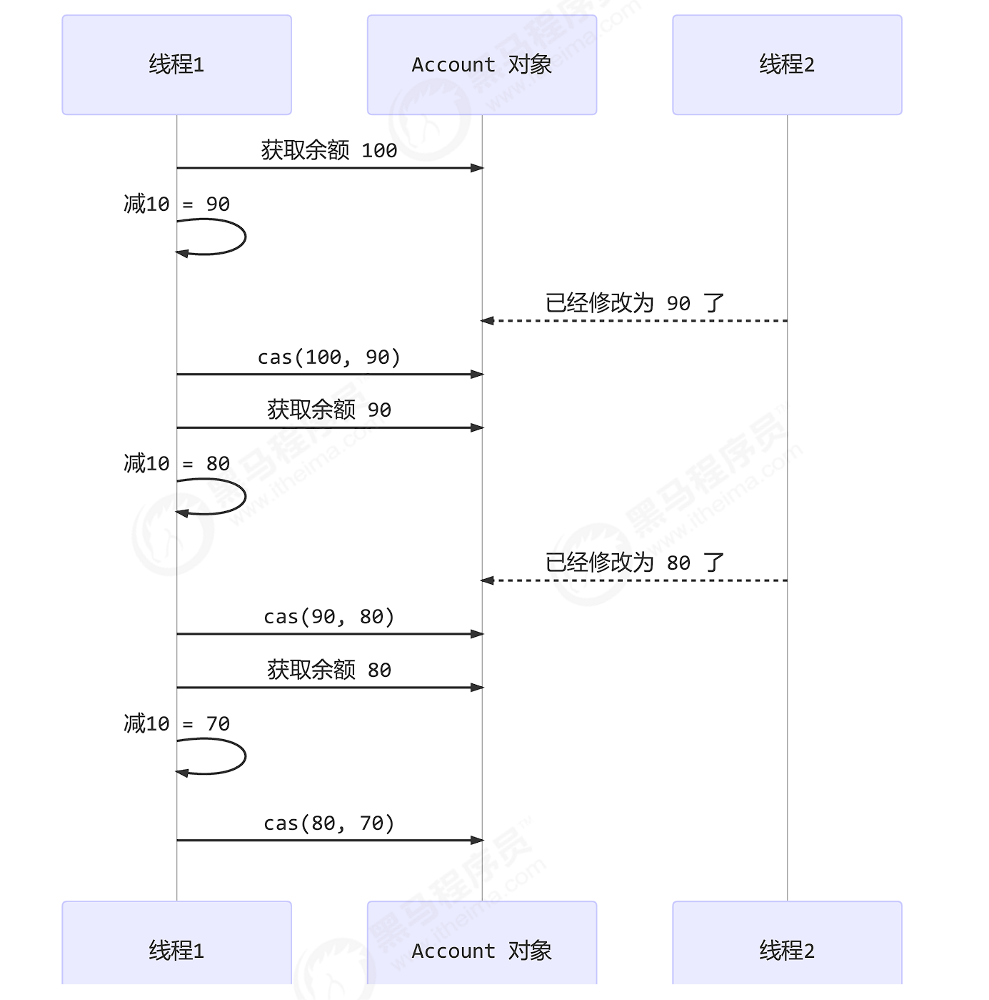
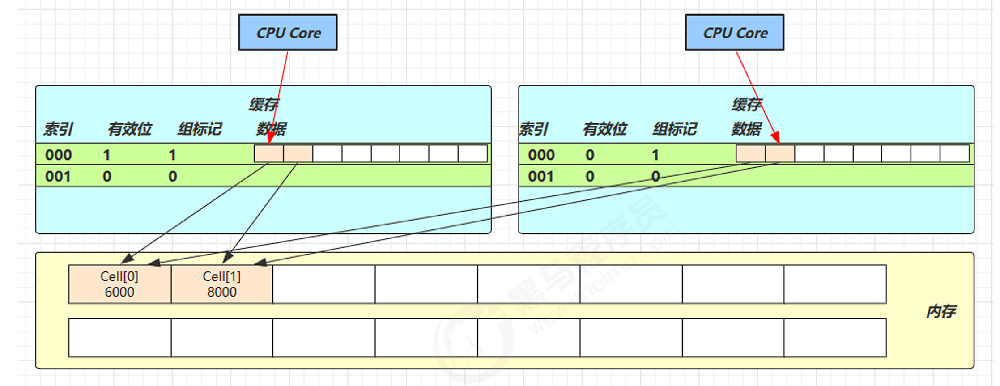

乐观锁
引例¶
class AccountWithoutLock {
private final AtomicInteger balance;
public AccountWithoutLock(int balance) {
this.balance = new AtomicInteger(balance);
}
public int getBalance() {
return balance.get();
}
public void withdraw(int amount) {
while (true) {
int prev = balance.get();
int next = prev - amount;
if (balance.compareAndSet(prev, next)) {
break;
}
}
}
}
其中的关键是 compareAndSet，它的简称就是 CAS （也有 Compare And Swap 的说法），它必须是原子操作。

CAS 和 volatile¶
获取共享变量时，为了保证该变量的可见性，需要使用 volatile 修饰。
private volatile int value;
public final int get() {
return value;
}
Attention
CAS 必须借助 volatile 才能读取到共享变量的最新值来实现【比较并交换】的效果
CAS效率更高¶
-
无锁情况下，即使重试失败，线程始终在高速运行，不会阻塞，而 synchronized 会让线程在没有获得锁的时候，发生上下文切换，进入阻塞。
-
但无锁情况下，因为线程要保持运行，需要额外 CPU 的支持，虽然不会进入阻塞，但由于没有分到时间片，仍然会进入可运行状态，还是会导致上下文切换。
Danger
高竞争情况：CAS可能因持续重试导致CPU资源浪费，此时悲观锁可能更合适
CAS 特点¶
结合 CAS 和 volatile 可以实现无锁并发，适用于线程数少、多核 CPU 的场景下。
- CAS 是基于乐观锁的思想：最乐观的估计，认为不会发生冲突
- synchronized 是基于悲观锁的思想：最悲观的估计，认为总会发生冲突
原子整数¶
AtomicBoolean
AtomicInteger
AtomicLong
相关API：
AtomicInteger i = new AtomicInteger(0);
// CAS操作
i.compareAndSet(0, 1);
i.incrementAndGet();// 自增1再获取
i.getAndIncrement();// 获取再自增1
// 自减1类似
...
i.addAndGet(10);// 自增指定值再获取
i.updateAndGet(x -> x * 100);// 函数式接口，更加灵活
Info
这些API都是基于compareAndSet来实现的
原子引用¶
Java提供了一系列原子引用类，用于在多线程环境下安全地更新对象引用。
这些类基于 CAS（Compare-And-Swap） 机制，保证原子性操作，避免使用锁带来的性能开销。
AtomicReference
AtomicMarkableReference
AtomicStampedReference
Java中的原子引用类位于 java.util.concurrent.atomic 包，主要包括：
| 类 | 说明 |
|---|---|
AtomicReference<V> |
普通原子引用，可原子更新对象引用 |
AtomicStampedReference<V> |
带版本号的原子引用，解决 ABA问题 |
AtomicMarkableReference<V> |
带标记位的原子引用（类似 AtomicStampedReference，但用布尔值标记） |
class DecimalAccount {
private final AtomicReference<BigDecimal> balance;
DecimalAccount(BigDecimal balance) {
this.balance = new AtomicReference<>(balance);
}
public BigDecimal getBalance() {
return balance.get();
}
public void withdraw(BigDecimal amount) {
BigDecimal prev, next;
do {
prev = balance.get();
next = prev.subtract(amount);
} while (!balance.compareAndSet(prev, next));
}
}
Info
BigDecimal是不可变对象，每次修改都会创建新对象，因此需要使用AtomicReference来保证线程安全
ABA 问题¶
ABA问题是 CAS（Compare-And-Swap） 操作中的一个经典并发问题，它可能导致程序逻辑错误，即使CAS操作成功，但实际数据可能已经被其他线程修改过多次。
ABA问题是指：
- 线程 A 读取共享变量的值为 A。
- 线程 B 在此期间修改该变量的值 A → B → A（即先改成B，又改回A）。
- 线程 A 执行CAS操作时，发现值仍然是 A，于是认为没有被修改过，从而CAS成功。但实际上，变量已经被修改过（B→A），可能导致逻辑错误。
解决方案：版本号/时间戳（Stamped Reference）
- 每次修改共享变量时，增加一个版本号（或时间戳）。
- CAS不仅要比较值，还要比较版本号。
- Java中的
AtomicStampedReference就是基于此实现。
AtomicStampedReference<Integer> atomicRef = new AtomicStampedReference<>(100, 0); // 初始值=100，版本号=0
int stampHolder = atomicRef.getStamp();
int currentValue = atomicRef.getReference; // 获取值和版本号
int newValue = currentValue + 1;
boolean success = atomicRef.compareAndSet(currentValue, newValue, stampHolder, stampHolder + 1);
原子数组¶
Java提供了一系列原子数组类，用于在多线程环境下安全地操作数组元素，而无需使用锁。这些类基于 CAS（Compare-And-Swap） 机制，保证对数组元素的原子性操作。
| 类 | 说明 |
|---|---|
AtomicIntegerArray |
原子整型数组，可原子更新 int[] |
AtomicLongArray |
原子长整型数组，可原子更新 long[] |
AtomicReferenceArray<E> |
原子引用数组，可原子更新对象引用数组 |
// 初始化一个长度为 5 的原子整型数组
AtomicIntegerArray atomicArray = new AtomicIntegerArray(5);
// 多个线程并发修改数组
Runnable task = () -> {
for (int i = 0; i < atomicArray.length(); i++) {
atomicArray.incrementAndGet(i); // 原子递增
}
};
Thread thread1 = new Thread(task);
Thread thread2 = new Thread(task);
thread1.start();
thread2.start();
try {
thread1.join();
thread2.join();
} catch (InterruptedException e) {
e.printStackTrace();
}
// 输出最终数组
for (int i = 0; i < atomicArray.length(); i++) {
System.out.println("Index " + i + ": " + atomicArray.get(i));
}
原子更新器¶
原子更新器是Java提供的一种高效的无锁原子操作方式，它允许对 已有的普通类 的 volatile 字段进行原子更新，而无需将整个类改为原子类。适用于当某个类的某个字段需要原子操作，但又不希望使用 AtomicInteger、AtomicReference 等包装类时。
| 类 | 说明 |
|---|---|
AtomicIntegerFieldUpdater<T> |
原子更新 int 类型字段 |
AtomicLongFieldUpdater<T> |
原子更新 long 类型字段 |
AtomicReferenceFieldUpdater<T,V> |
原子更新对象引用字段 |
class Student {
volatile String name;
@Override
public String toString() {
return "Student{" +
"name='" + name + '\'' +
'}';
}
}
Student student = new Student();
student.name = "Tom";
AtomicReferenceFieldUpdater<Student, String> updater = AtomicReferenceFieldUpdater.newUpdater(Student.class, String.class, "name");
updater.compareAndSet(student, "Tom", "六六");
System.out.println(student);
原子累加器¶
原子累加器（LongAdder、DoubleAdder）是Java 8引入的高性能原子计数器，适用于高并发写多读少的场景，比AtomicLong和AtomicDouble具有更高的吞吐量。
| 类 | 说明 | 适用场景 |
|---|---|---|
LongAdder |
高性能long累加器 |
计数器、统计 |
DoubleAdder |
高性能double累加器 |
浮点数统计 |
LongAccumulator |
支持自定义运算规则 | 更灵活的操作 |
DoubleAccumulator |
支持自定义浮点运算 | 浮点运算 |
static void testAtomicLong() {
AtomicLong counter = new AtomicLong();
long start = System.currentTimeMillis();
IntStream.range(0, 1000).parallel().forEach(i -> {
for (int j = 0; j < 10_000; j++) {
counter.incrementAndGet();
}
});
System.out.println("AtomicLong: " + (System.currentTimeMillis() - start) + "ms");
}
static void testLongAdder() {
LongAdder adder = new LongAdder();
long start = System.currentTimeMillis();
IntStream.range(0, 1000).parallel().forEach(i -> {
for (int j = 0; j < 10_000; j++) {
adder.increment();
}
});
System.out.println("LongAdder: " + (System.currentTimeMillis() - start) + "ms");
}
AtomicLong: 209ms
LongAdder: 38ms
累加器原理
1. 无竞争：直接CAS修改base（类似AtomicLong）
2. 有竞争：
- 初始化
Cell[]数组（默认CPU核数） - 线程哈希映射到不同Cell，减少冲突
- 最终结果 =
base + ∑cells[i]
伪共享¶
伪共享是多线程编程中的一个隐藏性能杀手，它会导致多核CPU的缓存系统失效，严重影响并发程序的性能。理解并解决伪共享问题对编写高性能并发代码至关重要。
伪共享（False Sharing）是指：
- 多个线程同时修改位于同一缓存行（Cache Line）中的不同变量
- 由于CPU缓存以缓存行为单位操作，导致本无关联的变量互相影响
- 造成不必要的缓存失效，引发严重的性能下降
缓存行（Cache Line）
- CPU缓存的最小单位（通常64字节）
- 当缓存行中任一数据被修改，整个行在所有CPU核心都会失效

解决方案：
使用@Contended注解（JDK8+）
class Data {
@sun.misc.Contended // 自动填充缓存行
volatile long x;
@sun.misc.Contended
volatile long y;
}
Warning
该注解默认不启用，需要在JVM参数中开启-XX:+RestrictContended，否则会被忽略
原理
@Contended注解会在字段前后添加填充字段，确保每个字段独占一个缓存行，避免伪共享问题。
Unsafe¶
Unsafe 是 Java 中的一个特殊工具类，提供了一系列直接操作内存、绕过JVM安全机制的底层方法。
它得名"Unsafe"正是因为它的操作不受JVM安全管理器约束，使用不当可能导致JVM崩溃。
内存操作¶
- 直接内存分配/释放
long address = unsafe.allocateMemory(1024); // 分配1KB堆外内存
unsafe.setMemory(address, 1024, (byte) 0); // 内存置零
unsafe.freeMemory(address); // 释放内存
- 内存读写
unsafe.putInt(address, 123); // 在指定地址写入int
int value = unsafe.getInt(address); // 读取int
对象操作¶
- 绕过构造器创建对象
MyClass obj = (MyClass) unsafe.allocateInstance(MyClass.class);
- 字段偏移量操作
long offset = unsafe.objectFieldOffset(MyClass.class.getDeclaredField("value"));
unsafe.putInt(obj, offset, 100); // 直接修改字段值
线程调度¶
- 线程挂起/恢复
unsafe.park(false, 0); // 挂起当前线程
unsafe.unpark(thread); // 恢复指定线程
- CAS操作
boolean success = unsafe.compareAndSwapInt(obj, offset, expect, update);
数组操作¶
- 获取数组元素偏移
int base = unsafe.arrayBaseOffset(int[].class);
int scale = unsafe.arrayIndexScale(int[].class);
获取Unsafe实例
出于安全性考虑，Unsafe 被设计为限制获取：
反射获取（最常用）
Field theUnsafe = Unsafe.class.getDeclaredField("theUnsafe");
theUnsafe.setAccessible(true);
Unsafe unsafe = (Unsafe) theUnsafe.get(null);
从TrustedFinalizer获取（JDK内部）
// 仅供了解，实际不推荐
Unsafe unsafe = sun.misc.Unsafe.getUnsafe();
上一节：并发编程三要素
下一节：不可变类